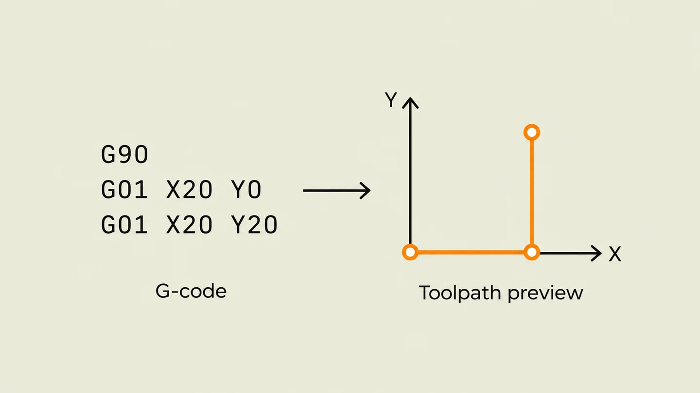
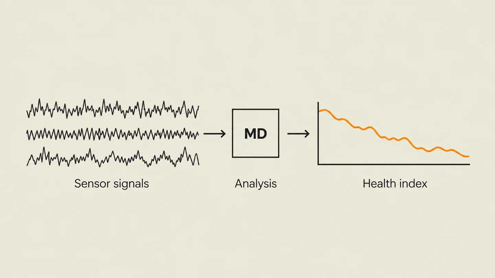
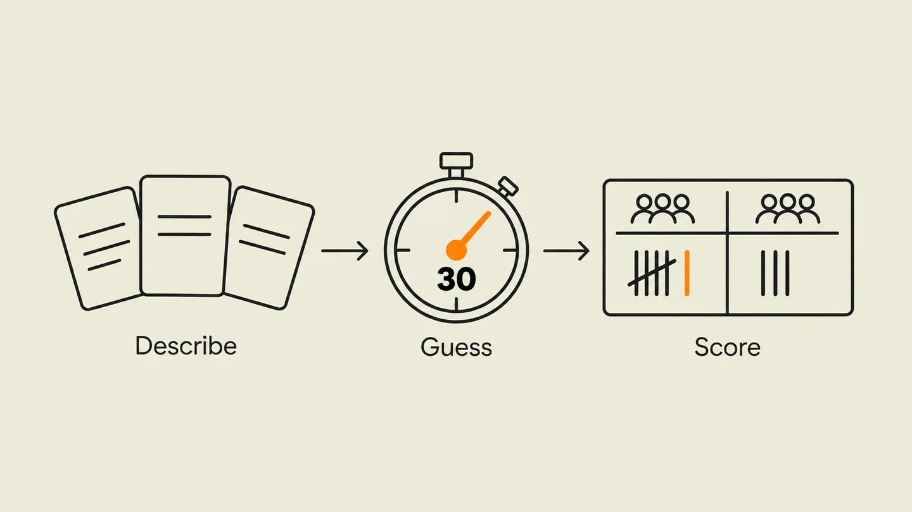

Portfolio
Select projects from the portfolio below. Each entry links to a dedicated page with detailed outcomes, roles, and technology stacks.

OPTIBELT
Final-year conveyor monitoring project. My work: the motor health index and operating the integrated system on Jetson Nano.

CNC Simulator & Visualizer
Catch G-code errors before machine crashes — lexer, parser, and visual validation in Python.

Mahalanobis Health Index
Predict equipment failure before downtime — validated multivariate fault detection for industrial systems.

Environmental Telemetry
An air-quality telemetry simulation comparing five modulation schemes, from signal preparation and noisy-channel transmission to recovery and alerts.

Bible Quest (PWA)
Shipped and played — offline-first PWA for fellowship game nights. Designed, built, and deployed.